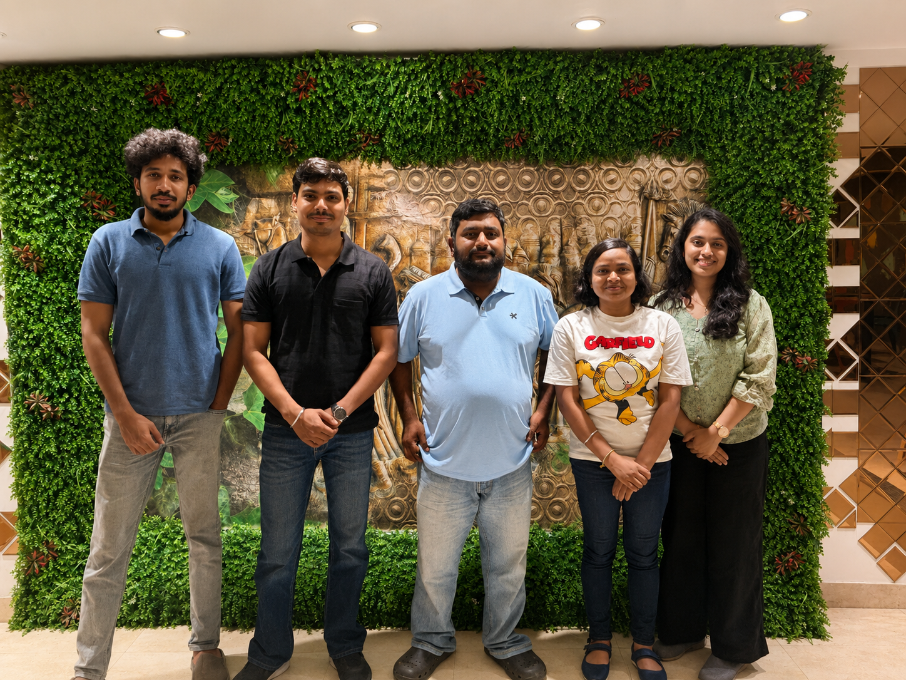
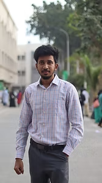
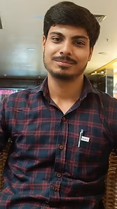

Team
Team
Sarbajna Lab | Sustainable Organometallic Chemistry and Catalysis
The Sarbajna Lab works across organometallic chemistry, molecular catalysis, electrocatalysis, catalyst immobilization, hydrogen-transfer chemistry, and bioactive coordination compounds. The group combines synthesis, structural analysis, electrochemical evaluation, and data-guided interpretation to develop molecular systems with catalytic and functional relevance.
Research themes
- Organometallic and molecular catalysis
- Electrocatalysis and catalyst immobilization
- Hydrogen-transfer and sustainable transformations
- Bioactive coordination compounds

Principal Investigator
Dr. Abir Sarbajna
Assistant Professor Senior Grade II
Department of Chemistry
School of Advanced Sciences, VIT Vellore
Dr. Sarbajna leads the Sarbajna Lab in organometallic chemistry, molecular catalysis, electrocatalysis, catalyst immobilization, and sustainable chemical transformations. The group develops molecular and hybrid systems that connect structure, redox behavior, interfacial chemistry, and catalytic function.
The lab combines synthesis, structural characterization, electrochemical evaluation, mechanistic analysis, and data-guided interpretation to design functionally relevant molecular catalysts and coordination compounds.
Current Position
Assistant Professor Senior Grade II
Department of Chemistry
VIT Vellore
Joined June 2022
International Experience
Humboldt Fellow, Ruhr-Universität Bochum
Postdoctoral researcher, San Diego State University
Postdoctoral researcher, OIST Japan
Education
Ph.D. in Chemistry, IIT Kanpur
Advisor: Prof. Jitendra K. Bera
M.Sc. in Inorganic Chemistry, BHU
Gold Medalist
Profiles
Experience
VIT Vellore
Assistant Professor Senior Grade II
June 2022 – present
Ruhr-Universität Bochum
Alexander von Humboldt Postdoctoral Fellow
Advisor: Prof. Viktoria H. Gessner
March 2020 – May 2022
San Diego State University
Postdoctoral Researcher
Advisor: Prof. Douglas B. Grotjahn
October 2018 – December 2019
Okinawa Institute of Science and Technology, Japan
Postdoctoral Researcher
Advisor: Prof. Julia R. Khusnutdinova
August 2017 – August 2018
Selected Funding and Distinctions
SERB Starting Research Grant
Principal Investigator, ₹33 lakh
Dec 2023 – Dec 2025
VIT SEED Research Grant
Principal Investigator, ₹5 lakh
Aug 2023 – Aug 2025
Fellowships and Awards
Alexander von Humboldt Fellowship
SDSURF Fellowship
OIST Fellowship
UGC Doctoral Fellowship
BHU M.Sc. Gold Medal
Group
Current Group Members
Group photograph, from left to right: Mohamed Asfaq, Dhruv Dhiman, Dr. Abir Sarbajna, Tumpa Singh, and Justy George.


Mohamed Asfaq
Research Scholar
Works on synthetic chemistry and catalyst-related research activities in the group.

Dhruv Dhiman
Research Scholar
Works on coordination complexes, structure–activity relationships, and antimicrobial and cytotoxic metal-complex chemistry.
Tumpa Singh
Joint Research Scholar
Works on immobilized molecular catalysts, electrode interfaces, and green-hydrogen-relevant catalysis. Jointly supervised with Dr. Sreetama Ghosh.
Justy George
Research Scholar
Works on molecular catalysis, sustainable chemistry, and related research activities in the group.
Student and Collaboration Opportunities
We welcome motivated students and collaborators interested in molecular catalysis, organometallic synthesis, electrochemistry, immobilized catalysts, bioactive coordination compounds, and data-guided catalyst analysis.
Contact the Lab